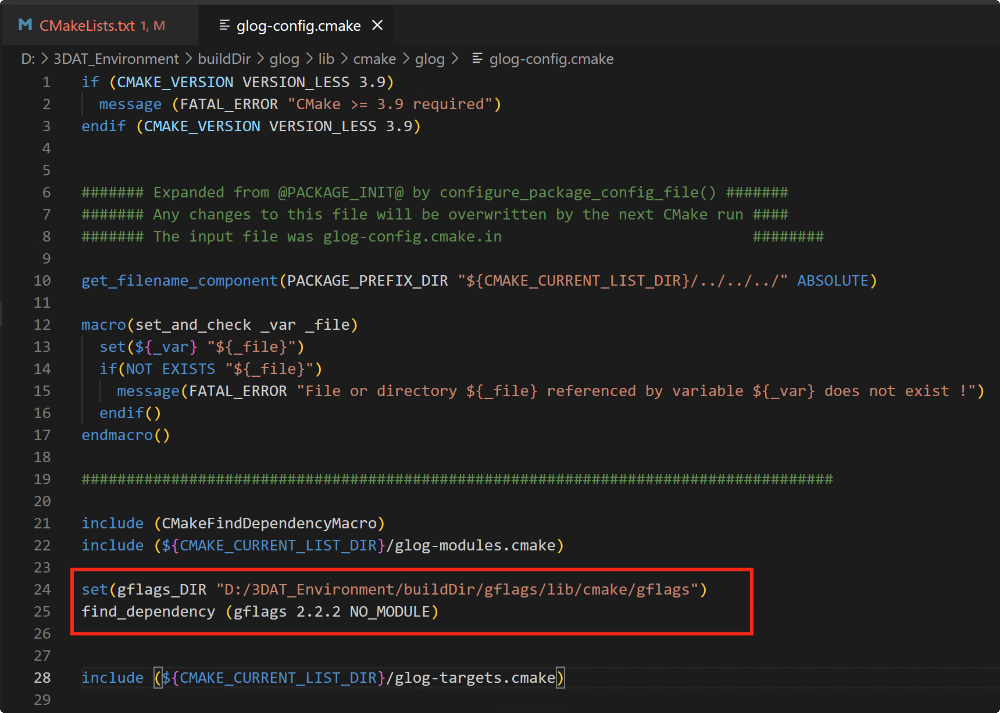

Windows CMake 引用自编译 glog 库和 gflag 库报错问题
1 | find_package(Gflags REQUIRED PATHS "D:/3DAT_Environment/buildDir/gflags/lib/cmake/gflags") |
如上所示，gflags 库单独所以是可以找到的，但再查找 glog 时则提示无法找到 gflags。
查找一番后大体定位问题在于 glog 会重新调用系统 cmake find 来查找 gflags 而不是调用自己设定的路径，大致问题描述如下。
- glog编译依赖gfags导致问题 - cyssmile - 博客园
最后解决方案是，在 glog 的 glog-config.cmake 中加入 gflags 的路径，然后再次调用就可以了。

All articles on this blog are licensed under CC BY-NC-SA 4.0 unless otherwise stated.